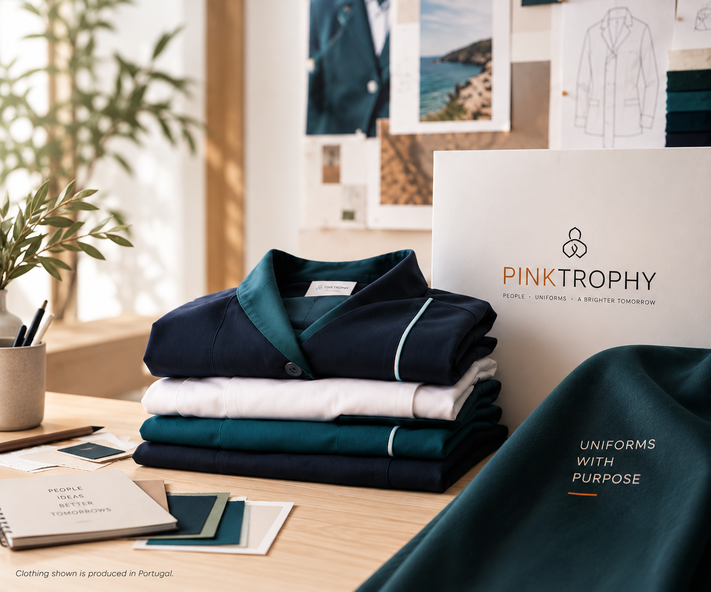
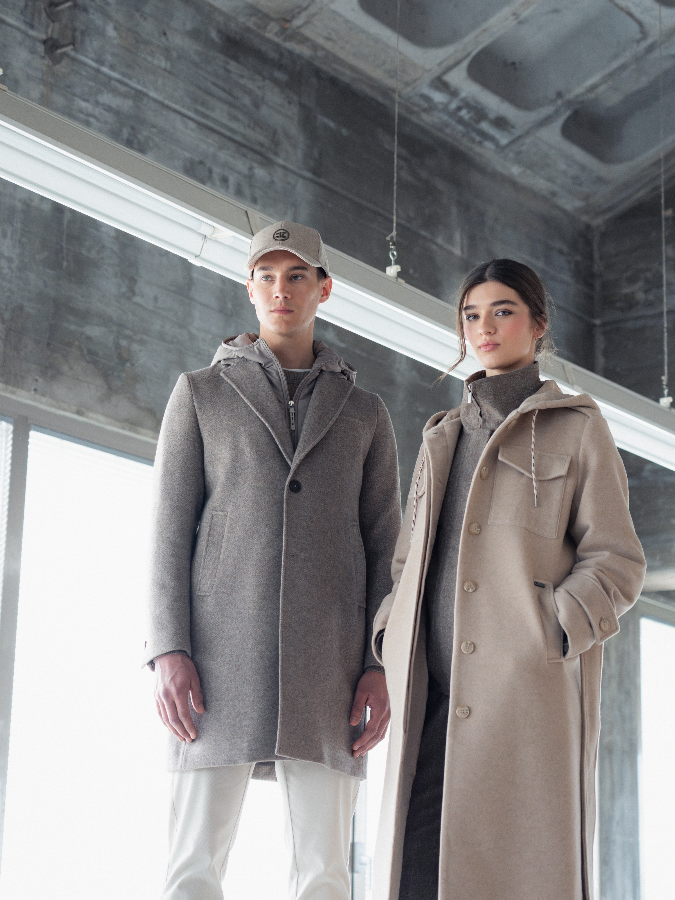
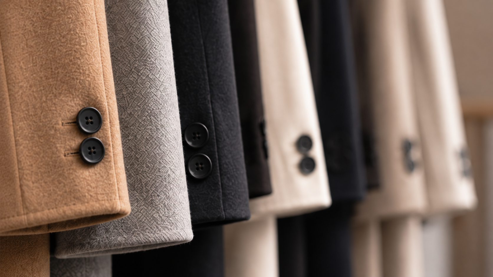

Design & Development
From initial concepts to technical development, modelling, prototypes and samples.
A sourcing and manufacturing partner for fashion, uniforms and professional apparel — connecting European businesses with flexible nearshore production in Portugal and Morocco.
DISCOVER OUR SERVICES →
One sourcing partner from first brief to final delivery.
We coordinate the complete textile journey — from product development and sourcing to manufacturing, quality control and final delivery.
From initial concepts to technical development, modelling, prototypes and samples.
Fabrics, trims and components selected around the design, performance and commercial requirements of each project.
Flexible manufacturing coordinated through our production network in Portugal and Morocco.
Close production follow-up, finishing and quality control throughout the manufacturing process.
Packing, shipment preparation and logistics coordination through to final delivery.
Our production network in Portugal and Morocco offers European businesses a flexible nearshore alternative, combining product expertise, close communication, production follow-up and one point of contact.




Selected images illustrate production and project experience within the sourcing and manufacturing network. Third-party trademarks remain the property of their respective owners.
PinkTrophy connects European businesses with an established production network in Portugal and Morocco. We coordinate fashion, uniform and professional apparel projects from development through final delivery with transparency, flexibility and close communication.
TALK TO US →Collection development, outerwear, tailoring and garment production.
Branded uniforms and corporate apparel developed around each client's identity and operational requirements.
Professional uniforms combining brand identity, functionality, comfort and durability.
Workwear and apparel solutions for customer-facing and operational teams.
Uniform programmes designed to balance aesthetics, comfort and everyday performance.
Bespoke sourcing, product development and manufacturing programmes tailored to specific requirements.
Tell us what you are developing. Let's explore how PinkTrophy can support your next fashion, uniform or professional apparel project.